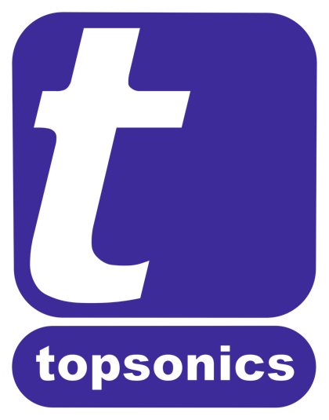
کاتالوگ محصول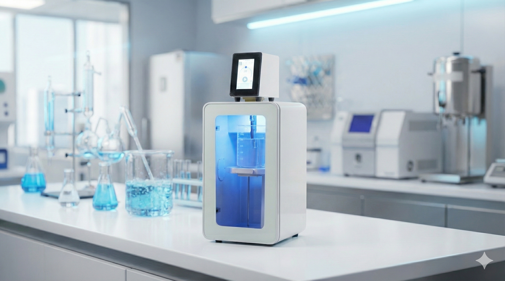
UHP-400 توسط شرکت توسعه فناوری مافوق صوت در ایران طراحی و ساخته میشود. سه بخشی که معمولاً باید جداگانه تهیه شوند — محفظهٔ صداگیر، نمایشگر دما و واحد کنترل لمسی — در این دستگاه در یک مجموعهٔ واحد جمع شدهاند.
یک هموژنایزر اولتراسونیک، انرژی الکتریکی را به ارتعاش مکانیکی در فرکانسی بالاتر از محدودهٔ شنوایی انسان تبدیل میکند. یک مبدل پیزوالکتریک در داخل دستگاه با همین فرکانس ارتعاش میکند؛ هورن تیتانیومی دامنهٔ این ارتعاش را تقویت کرده و به نوک پروب — که در مایع نمونه غوطهور است — منتقل میکند.
نوک پروب بهسرعت مایع اطراف خود را فشرده و منبسط میکند؛ این چرخه، حبابهای بخار میکروسکوپی تشکیل میدهد که بلافاصله و با شدت فرومیپاشند — پدیدهای به نام کاویتاسیون. فروپاشی هر حباب، یک جهش موضعی و آنی در فشار و دما ایجاد میکند. این اثر، در مقیاس میلیونها حباب در ثانیه، همان چیزی است که ذرات را پخش میکند، دیوارهٔ سلولی را میشکند، مایعات غیرقابلاختلاط را امولسیون میکند و استخراج و واکنشها را تسریع میبخشد.
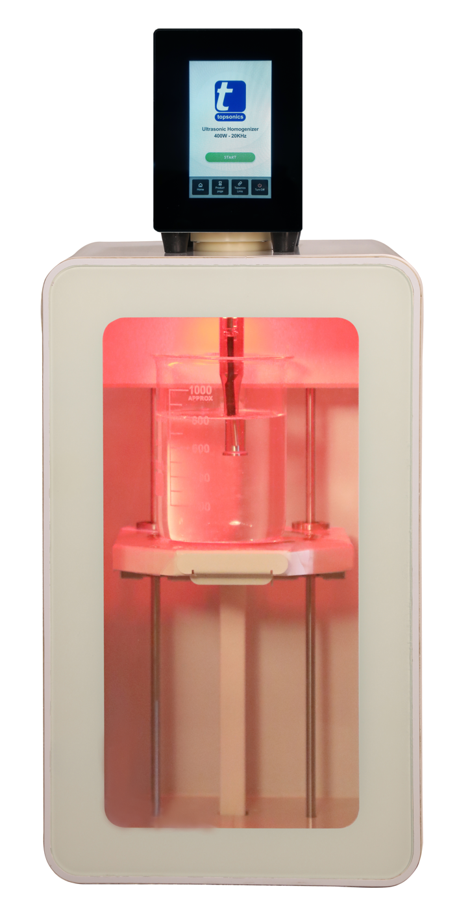
وضعیت دستگاه در حین کار از پشت پنجرهٔ محفظه نیز قابل مشاهده است: نور داخلی محفظه برای هر مرحله (آماده، در حال اجرا، توقف، پایان، خطا) رنگ مشخصی نشان میدهد و این رنگ از طریق صفحهٔ لمسی قابل انتخاب است. تنظیم توان، حالت پالس و دما نیز از همین صفحه انجام میشود و سوابق اجراهای قبلی روی دستگاه نگهداری میشود.
| نوع دستگاه | هموژنایزر اولتراسونیک رومیزی (نوع پروبی) |
|---|---|
| فرکانس | ۲۴ کیلوهرتز ± ۱ کیلوهرتز، ثابت |
| توان خروجی | ۰ تا ۴۰۰ وات، قابلتنظیم |
| حالت پالس | دیوتیسایکل ۵ تا ۹۵٪ از یک دورهٔ ۱۵ ثانیهای، هر چرخه حداکثر ۳۰ دقیقه |
| واحد کنترل | صفحهنمایش لمسی خازنی پنجاینچی، با ثبت سوابق اجرا |
| پروبها | تیتانیوم Ti-6Al-4V، نوک ۷ یا ۱۵ میلیمتر |
| حجم کار | ۱۰۰ تا ۳٬۵۰۰ میلیلیتر با پروب ۱۵ میلیمتر؛ حجمهای کوچکتر با پروب ۷ میلیمتر |
| محفظه | محفظهٔ صداگیر توکار با پنجره و نور رنگی داخلی |
| دما | سنسور توکار ۰ تا ۸۰ درجهٔ سلسیوس، با آلارم و توقف خودکار در حد مجاز |
| برق ورودی | ۲۲۰ ولت، ۵۰ تا ۶۰ هرتز، ۲ آمپر |
| ابعاد | عرض ۳۰۰ میلیمتر، ارتفاع ۶۷۰ میلیمتر |
| رنگ محفظه | سفید، سبز، آبی |
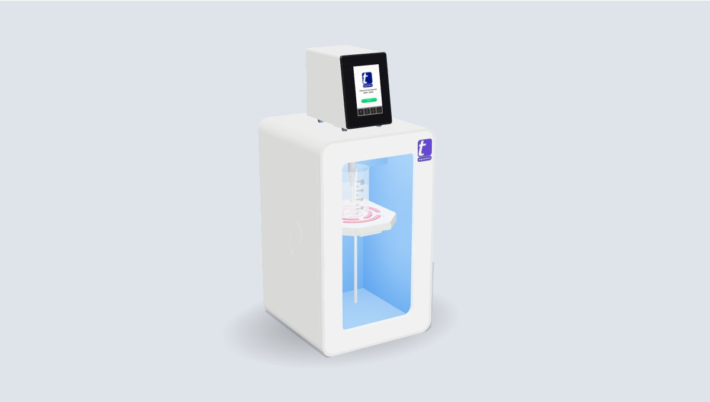
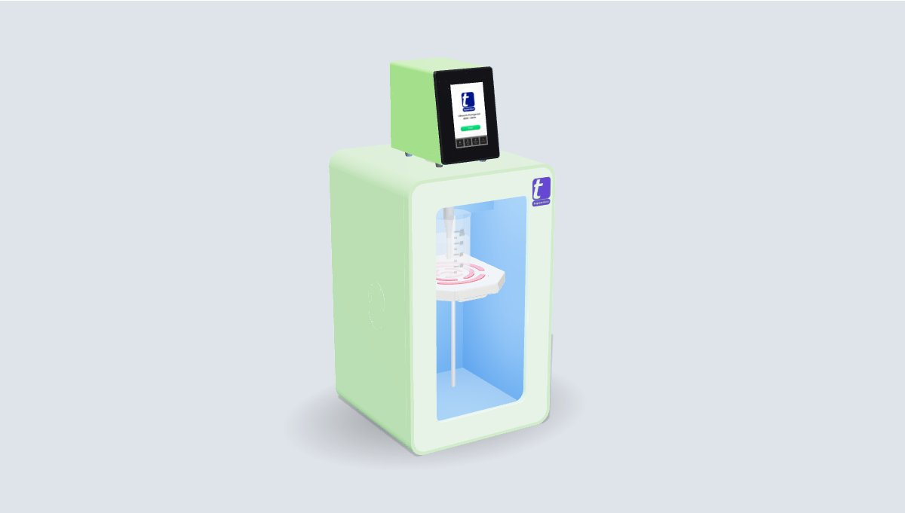
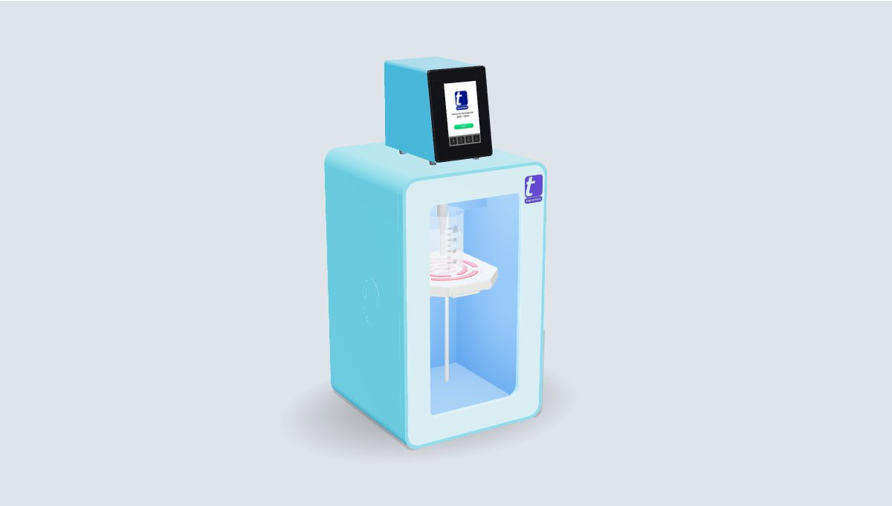
تصاویر واقعی از محمولهای که برای مشتری ارسال میشود، نه تصاویر شبیهسازیشده.
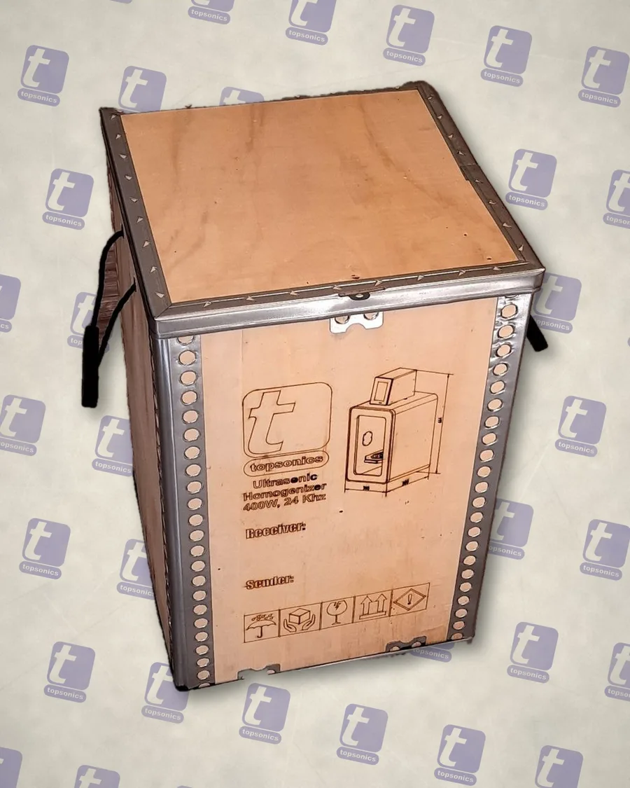
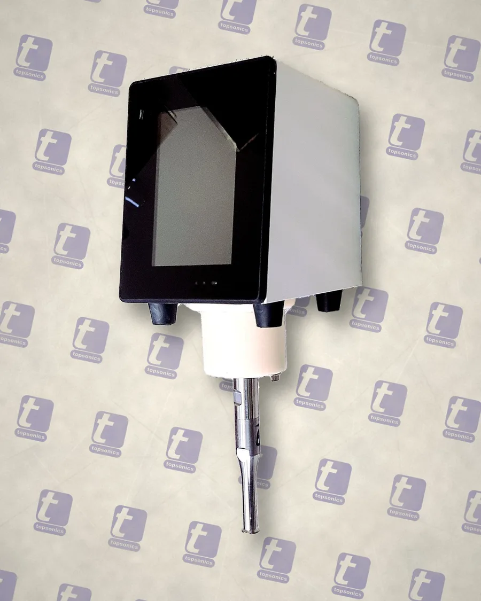
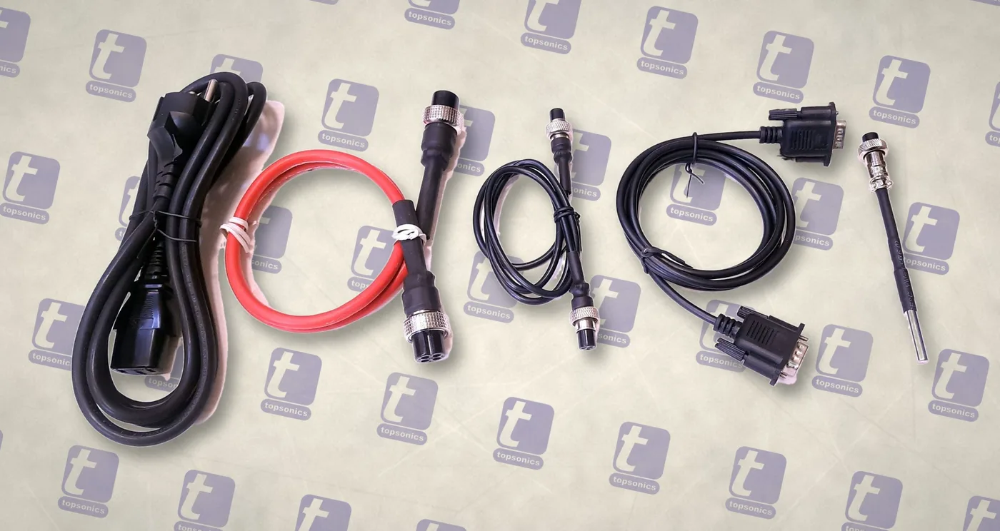
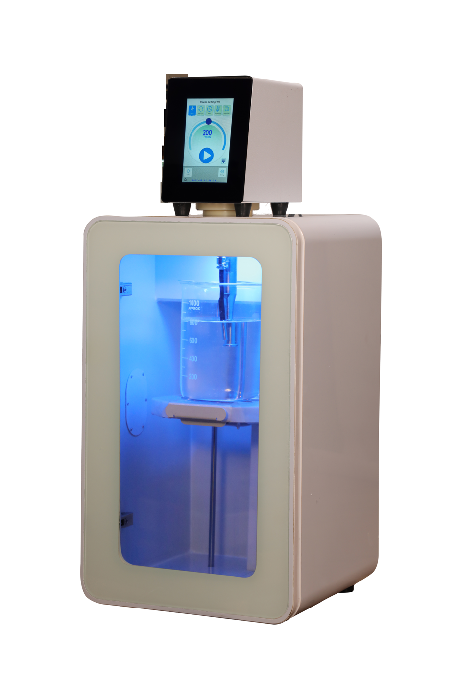
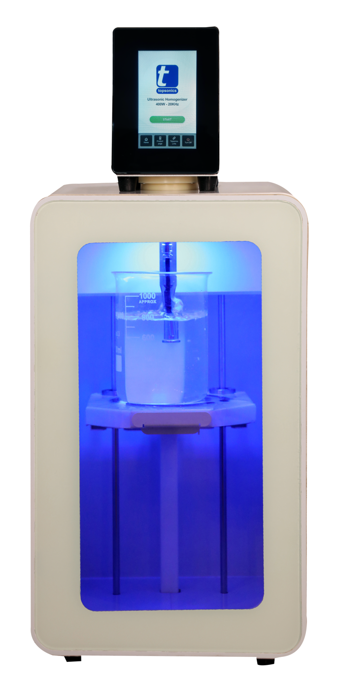
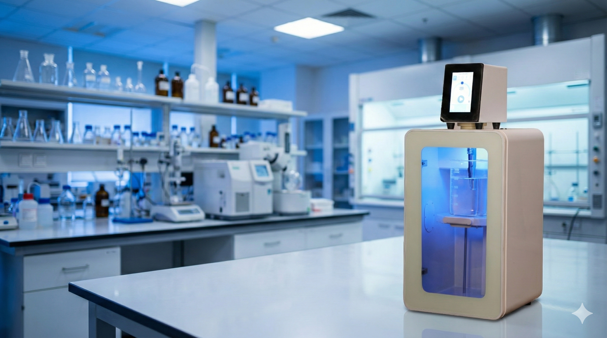
کاربردهای اصلی UHP-400 نزد مشتریان فعلی؛ هر مورد با شواهد علمی در صفحهٔ بعد پشتیبانی میشود.
شکستن دیوارهٔ باکتری، مخمر و بافت برای استخراج DNA، RNA و پروتئین؛ و خرد کردن کروماتین در آزمایش ChIP.
اختلاط مایعات غیرقابلامتزاج و پخش یکنواخت نانوذرات در مایع، تا اندازهٔ ذرات بسیار ریز.
انتقال سریعتر ترکیبات فنولی و فعال از مواد گیاهی به فاز مایع، در زمان کوتاهتر از خیساندن معمول.
ذخیره و بازخوانی توان، دیوتیسایکل، زمان و حد دما، برای اجراهای یکسان بین اپراتورها و شیفتها.
نمونه و حجم کار خود را برای ما شرح دهید تا تنظیمات پیشنهادی را ارائه کنیم.
هر کاربرد بالا به یک مقالهٔ داوریشده و دسترسیآزاد متکی است. تصویرها و یافتهها با نمونهها و تجهیزات خود آن پژوهشها بهدست آمدهاند، نه با UHP-400؛ عدد سمت راست پاراگراف، مشخصهٔ متناظر در UHP-400 است.
برای حجم ۱۰۰ میلیلیتر تا ۳٫۵ لیتر از پروب ۱۵ میلیمتری و برای حجمهای کمتر (ویال، لوله، بشر کوچک) از پروب ۷ میلیمتری استفاده کنید. هر دو پروب از تیتانیوم Ti-6Al-4V هستند و روی یک استک آکوستیک بسته میشوند.
حالت پالس، خنککردن و حد دما را با هم به کار ببرید. دیوتیسایکل پالس از ۵ تا ۹۵٪ یک دورهٔ ۱۵ ثانیهای قابلتنظیم است و سنسور داخلی با رسیدن به حد تعیینشده، کار را خودکار متوقف میکند.
نوک پروب را حدود ۱۰ تا ۱۵ میلیمتر زیر سطح مایع و در مرکز ظرف قرار دهید، دستکم به اندازهٔ قطر پروب دور از دیواره و کف ظرف.
خیر. UHP-400 محفظهٔ صوتی داخلی با در و پنجره دارد؛ پروب داخل محفظه کار میکند و نمونه از پشت پنجره قابلمشاهده است.
پروب و رنگ بدنه را در فرم پیشفاکتور فوری سایت انتخاب کنید تا همان لحظه پیشفاکتور رسمی با شماره و تاریخ، بهصورت PDF صادر شود؛ یا مستقیماً برای قیمت روز تماس بگیرید.
شرکت توسعه فناوری مافوق صوت — ساخت ایران.
برای استعلام قیمت یا مشاوره دربارهٔ نمونهٔ خود، نوع نمونه، حجم کار، تعداد دستگاه و رنگ بدنهٔ موردنظر را در فرم پیشفاکتور فوری سایت وارد کنید یا مستقیماً تماس بگیرید.